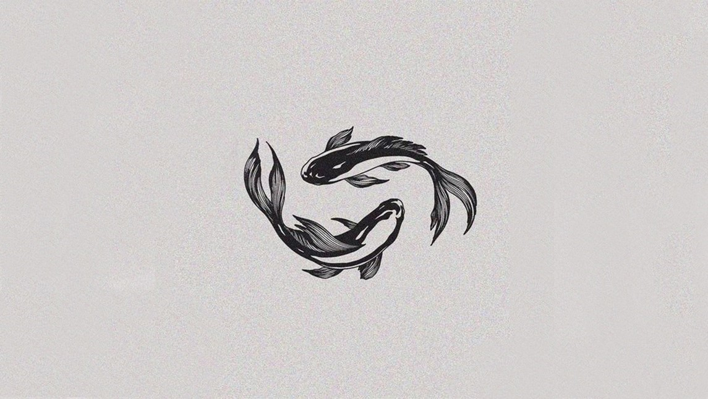

La construcción colectiva de un mundo más bonito
Esta serie de artículos -esta columna- es para todos aquellos que no solamente sueñan con un mundo más bonito, sino, como dice Charles Eisenstein, que sabemos en nuestros corazones que es posible. Considero que hay algunos principios, algunas cualidades e incluso un par de temas complejos que hay que establecer para ir en camino hacia ellos. Uno de los principios trasversales que saldrán en varios artículos tiene que ver con, no solamente ver al otro como aliado, también verlo como igual con ideas y opiniones tan correctas y buenas como las mías, y además verlo como otra manifestación del nosotros colectivo.
El artículo de hoy se dedicará a cómo construir una comunidad más equitativa y próspera desde una relación de igualdad, aprecio y respeto mutuo. Precisamente menciono estas tres características de la relación porque normalmente no es así y ni siquiera nos damos cuenta de ello. También quiero poner en debido balance la parte que juegan los individuos en esta construcción, y ser honestos y críticos con la parte que juegan los sistemas y estructuras.
“Dar el pescado en lugar de enseñar a pescar”
Esta frase, por ejemplo, señala solo la parte que juegan los individuos. No toma en cuenta en nada a los otros factores que puedan facilitar o impedir una fructuosa pesca.
Tal vez debamos ver esto como una escalera de valor agregado:
Dar el pescado. Una actividad necesaria en momentos de crisis alimentaria, y durante el desarrollo, por ejemplo, de un bebé o una niña para que pueda llegar a una edad productiva e interdependiente.
Enseñar a pescar. Necesaria para fomentar las habilidades que puedan faltar en una comunidad. Puede ser educación, o tal vez mejor dicho capacitación, para el manejo de una nueva tecnología o nuevo emprendimiento. Aquí quisiera radicalizar un poco el concepto y proceso de “educación” hacia un modelo algo parecido a la “educación liberadora” de Paulo Freire.
Agrego para completar esta escalada: Generar las condiciones para pescar. Muchos hábiles pescadores no tienen acceso a la pesca –tal vez el río está contaminado, tal vez el acceso al mar está impedido por hoteles exclusivos. Hay millones de campesinos que no tienen tierra para sembrar.
Generar las condiciones – los sistemas y estructuras – que permitan el pleno desarrollo de las personas y sus comunidades es la única forma sustentable a largo plazo.
Tampoco debemos menospreciar el acto de dar el pescado. No me voy a detener mucho tiempo aquí. Solo mencionar lo valioso y humano que es cultivar nuestra empatía y compasión para asegurar las condiciones básicas para la vida física y emocional de todas y todos –sobre todo mientras que no existan las condiciones estructurales para que las personas se puedan sostener solas. Sin embargo, cuando dar el pescado se vuelve un componente permanente de la sociedad, normalmente termina siendo una manera de no cambiar el sistema, para no cambiar las causas de la hambruna, etc., y así no poner en riesgo la supremacía, el poderío y la multiabundancia de los que más tienen. Hay otra expresión que tal vez nos puede ayudar a entender cuando esta provisión de pescado se vuelve vicio del sistema: nadie muerda la mano de quien le alimenta. La idea de esa estrategia sistémica es que con mucha precisión se les provee las mínimas comodidades a las personas, que se vuelven dependientes, además se mantienen en un estado de cansancio constante, sin tiempo para pensar, y distraídas -y así se minimiza su interés en cambiar el sistema, su posibilidad de entenderlo y poder pensar en mejorarlo.
Cuando hay que dar el pescado es importante mantener la dignidad de quienes lo reciben. A veces hablo de que para los que trabajamos en el sector social a veces ayudamos para ayudar, y otras veces ayudamos por nuestra necesidad de ayudar. Cuando ocurre lo segundo es común que deshumanicemos al otro.
En el segundo punto es todavía más sensible ese tema para mí porque en demasiadas ocasiones, aunque bien intencionada, enseñar a pescar se acompaña de una prepotencia, arrogancia o superioridad. Cuando escucho “hay que educar a la gente” o “hay que generar conciencia”, o “despertar” normalmente viene desde “yo sí sé, estoy despierto, soy consciente, estoy haciendo bien… apoyando, reciclando, etc”. El problema es que esta jerarquía se transmite y perdura generando pasividad y resentimiento en el “beneficiario” (objeto de la bondad del otro, en lugar de ser sujeto del desarrollo común). Y luego preguntamos por qué no son agradecidos.
Pongo un ejemplo: la basura. Es muy común que nos quejemos de la “falta de conciencia y educación de la gente” al ver la basura acumulada en las barrancas y los ríos. Es cierto, es una lástima y una falta de educación. Muchas veces estamos hablando de los “pobres” cuando lo decimos. Pregunto a los que señalamos esta falta de consciencia de otras personas, ¿cuál es la basura que nosotros arrojamos sin consciencia de ello? – hagámonos conscientes de que hay otras basuras que están impactando, tal vez a mayor escala en el mundo, por ejemplo el carbono, que, por lo regular, nosotros los “educados”, clase media, etc., producimos en mayor cantidad por mucho que las comunidades populares. Eso sin hablar de la basura social que proyectamos hacia los otros humanos (desprecio e insultos escondidos e indirectos).
Si bien la capacitación se puede entender como un traspaso o una transmisión de capacidades, normalmente técnicas, para alguna actividad específica, la educación no ocurre de la misma manera, no es un traspaso de información, ni es algo que puede hacer una persona a otra. La educación es un proceso que ocurre cuando las condiciones permiten poder generar una nueva conciencia mutua. La educación y la conciencia se genera en una relación y diálogo cuando hay escucha apreciativa deteniendo los prejuicios. La educación ocurre cuando las diferentes partes podemos conectarnos con nuestra propia fuente de sabiduría, compartirla y construir algo más grande de lo que teníamos individualmente. Esto es más difícil de lo que parece, porque no solamente nos saca de nuestra zona de confort a los que llegamos queriendo aportar y apoyar, pero las comunidades también están acostumbradas a que el experto llega a ayudarles y si no llega como experto no creen que hay valor agregado. La única educación que transforma y libera es la que horizontaliza de tal forma que podamos encontrarnos como pares, dispuestos a aprender todos los participantes incluyéndonos a nosotros mismos. Igualdad, aprecio y respeto mutuo deben reinar.
Finalmente llegamos a los sistemas y estructuras. El impedimento para el desarrollo y bienestar de una comunidad depende tanto de las habilidades y acciones de las personas de la comunidad como de las oportunidades, o falta de ellas, en las reglas del juego –y, si somos honestos, tenemos que reconocer que el campo de juego está sesgado. Como decía, no es que no sepan pescar, pero no sirve de nada si no hay peces o no hay forma de llegar a ellos… Continuará…